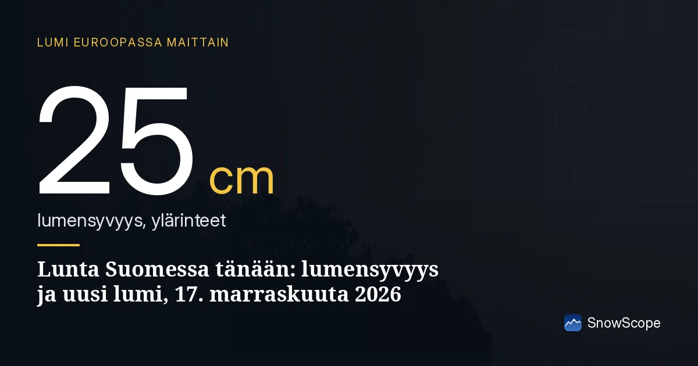

Lumiraportit · Lumi Euroopassa maittain
Lumi Euroopassa maittain: Suomessa lumen alla on tänään noin 178 550 km² (tiistai 17. marraskuuta). Se on 21 190 km² enemmän kuin eilen.
Snow by country today
The whitest countries today: Norway (89 %), Sweden (87 %) and Switzerland (59 %).
Most new snow in the week ahead: Switzerland (125 cm), France (125 cm) and Italy (84 cm).
| Country | White | Deepest resort | Next 7 days |
|---|---|---|---|
| Norway | 89 % | Riksgränsen · 167 cm | 33 cm |
| Sweden | 87 % | Björkliden · 139 cm | 19 cm |
| Switzerland | 59 % | Glacier 3000 · 58 cm | 125 cm |
| Finland | 55 % | Kallin · 26 cm | 13 cm |
| Austria | 48 % | Stubaier Gletscher · 60 cm | 55 cm |
| Italy | 26 % | La Thuile ski · 64 cm | 84 cm |
| France | 13 % | Orelle · 130 cm | 125 cm |
| Slovakia | 11 % | Vysoké Tatry · 30 cm | 18 cm |
| UK | 10 % | Nevis Range · 16 cm | 12 cm |
| Slovenia | 10 % | Sella Nevea · 28 cm | 35 cm |
| Andorra | 7 % | Ordino-Arcalis · 6 cm | 9 cm |
| Germany | 4 % | Zugspitze · 53 cm | 38 cm |
| Romania | 4 % | Balea Lac · 14 cm | 28 cm |
| Poland | 3 % | Karpacz · 49 cm | 14 cm |
| Ukraine | 2 % | Драгобрат · 2 cm | 28 cm |
| Albania | 0 % | – | 26 cm |
| Bosnia and Herzegovina | 0 % | – | 31 cm |
| Bulgaria | 0 % | Borovets · 2 cm | 8 cm |
| Czechia | 0 % | Lyžařský vlek Malý Šišák · 15 cm | 10 cm |
| Spain | 0 % | Espot · 5 cm | 5 cm |
| Greece | 0 % | – | 1 cm |
| Croatia | 0 % | – | 29 cm |
| Hungary | 0 % | – | 10 cm |
| Ireland | 0 % | – | 0 cm |
| Montenegro | 0 % | Ski centar Savin kuk · 6 cm | 33 cm |
| North Macedonia | 0 % | – | 16 cm |
| Portugal | 0 % | – | 0 cm |
| Serbia | 0 % | – | 7 cm |
| Kosovo | 0 % | – | 18 cm |
Paljonko lunta on Suomessa? Lumipeite ja ennuste, 17. marraskuuta 2026

Suomessa lumen alla on tänään noin 178 550 km² (tiistai 17. marraskuuta). Se on 21 190 km² enemmän kuin eilen.
Lumipeite tänään
Viikko sitten luku oli 52 200 km², joten lumipeite on kasvanut 126 350 km². Lumi ulottuu alavimpiin maihin ja rannikolle asti.
keskiviikko 18. marraskuuta 2026
tiistai 17. marraskuuta 2026
maanantai 16. marraskuuta 2026

SnowScope puhelimessasiLumensyvyys joka keskukselle, puuterihälytykset ja 3D-kartta, ilmaiseksi.
Lataa sovellus